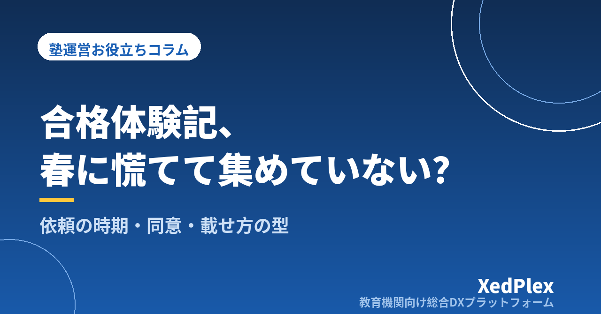

塾の合格体験記・合格実績の集め方と載せ方｜依頼の時期・質問シート・掲載同意・誤解されない書き方を型にする

合格発表が終わって一息ついた3月、「今年こそ合格体験記をホームページに載せよう」と思い立ったものの、卒業生にはもう連絡がつきにくい。やっと書いてもらえた原稿は「先生のおかげで合格できました」の一行だけ。チラシに合格校を並べたいけれど、名前を出していいのか、講習だけ来ていた生徒を数えていいのか迷って、結局何も載せられなかった──そんな経験はないでしょうか。
大手塾のように何百人もの実績があるわけではない小さな塾にとって、1人ひとりの合格体験記は「この塾でどう過ごし、どう変わったか」を伝えられる貴重な材料です。一方で、集めるのに手間がかかり、載せ方を誤ると保護者の信頼を損ねるおそれもあります。この記事では、入試の前から段取りを決めておき、無理なく集めて、誤解されない形で載せるための型を整理します。
合格体験記・合格実績が集まらない3つの理由
毎年「載せたい」と思いながら集まらない塾には、共通する理由があります。
- お願いするタイミングが遅い：合格発表のあとは、生徒も保護者も入学準備で忙しくなります。卒業後に連絡しても、返事が来ないまま新年度になりがちです。
- 何を書けばいいか伝えていない：「体験記を書いて」とだけ頼むと、生徒は何を書けばいいか分からず、短い感謝の言葉で終わってしまいます。
- 載せていいかの確認があいまい：名前や学校名、写真をどこまで出すかを決めないまま集めると、載せる段階で迷い、結局お蔵入りになります。
つまり、問題は生徒の協力度ではなく、「いつ・何を・どこまで」を塾側が先に決めていないことにあります。入試を控えたこの時期に段取りを決めておけば、春の作業は格段に軽くなります。
ステップ1：依頼のタイミングを入試前から決めておく
おすすめは、依頼を一度で済ませず、時期を分けて小さくお願いすることです。
| 時期 | やること |
|---|---|
| 入試の1〜2か月前 | 受験生と保護者に「合格したら体験記をお願いするかもしれない」と予告しておく。強制ではないことも伝える |
| 合否連絡を受けたとき | お祝いを伝え、体験記の依頼と提出期限（例：2週間後）を案内する |
| 最終授業・卒業の挨拶の日 | 塾で10〜15分の時間をとって、その場で書いてもらう |
| 期限の数日前 | 未提出の家庭に一度だけリマインドする |
いちばん確実なのは、塾にいる時間の中で書いてもらうことです。持ち帰りにすると、どうしても後回しになります。合否連絡の受け方そのものは入試直前期の運営と合否連絡の受け方で整理しているので、そこに「体験記の依頼」を1行足しておくとよいでしょう。毎年の作業として年間事務カレンダーに組み込んでおけば、来年以降も忘れません。
合否連絡の場で、全員に一律で体験記を頼むのは避けます。第一志望に届かなかった生徒にも「この塾で頑張ったこと」を書いてもらえる場合はありますが、お願いするかどうか、いつ切り出すかは、本人と保護者の様子を見て個別に判断しましょう。
ステップ2：「質問シート」で書きやすくする
白紙の原稿用紙を渡すより、質問に答える形にしたほうが、生徒は書きやすく、内容も具体的になります。読む側の保護者が知りたいことから逆算して、質問は5つ程度に絞ります。
| 質問 | 引き出したい内容 |
|---|---|
| 入塾したときの状況や悩みは？ | 読む人が「うちの子と同じだ」と思える出発点 |
| 塾でいちばん役に立った習慣ややり方は？ | 塾の指導の特徴（自習、質問のしかた、計画など） |
| 苦しかった時期と、どう乗り越えたか | 体験記に厚みが出る部分 |
| 受験当日や直前期にやってよかったこと | 後輩に役立つ具体的なアドバイス |
| これから受験する後輩へひとこと | 締めくくりの言葉 |
あわせて、保護者向けの短い質問（1〜2問）も用意しておくと、「保護者から見た塾」の声も集まります。こちらは連絡アプリやメールで送り、返信してもらう形にすると負担が小さくなります。
なお、文章を塾側で整えるのは、誤字の修正や読みやすさのための最小限にとどめます。本人が書いていない内容を足したり、言い回しを大きく変えたりしないことが大切です。大きく手を入れたい場合は、修正後の文章を本人に見せて了承を得ましょう。
ステップ3：掲載の同意は「範囲」を分けて確認する
合格体験記には、名前や学校名、場合によっては顔写真など、生徒の個人情報が含まれます。「載せてもいい？」と口頭で聞くだけでなく、何を・どこに載せるかを分けて確認し、記録に残すことが、あとのトラブルを防ぎます。
| 確認する項目 | 選択肢の例 |
|---|---|
| 名前の表記 | 実名／イニシャル／「Aさん」などの仮名 |
| 学校名 | 合格校名を出す／出さない、出身中学・小学校名は出さないのが基本 |
| 写真 | 顔写真／後ろ姿や手元のみ／写真なし |
| 掲載する場所 | 教室内の掲示／チラシ／ホームページ／SNS |
| 掲載期間 | 「〇年度まで」など期限を決める。取り下げの申し出にも応じる |
同意は本人だけでなく保護者からももらい、書面やメッセージなど後から確認できる形で残しておきます。特にホームページやSNSは一度公開すると広く拡散する可能性があるため、教室内の掲示よりも慎重に扱うのが安心です。個人情報の扱いの基本は生徒の個人情報管理の基本でも解説しています。具体的な同意書の文言や法的な扱いに迷う場合は、専門家や所轄機関に確認してください。
ステップ4：合格実績は「誤解されない書き方」を先に決める
合格体験記と並んで悩ましいのが、チラシやホームページに載せる合格実績の数え方です。広告の表示は、実際より著しく良く見せるものであってはならないという考え方が一般的で、塾の合格実績もその対象になり得ます。数え方を事前にルールとして決め、いつでも説明できる状態にしておきましょう。
- 誰を数えるかを決める：通常授業の在籍生だけか、講習のみの受講生も含めるのか。含める場合はその旨を書き添えます。
- 人数と件数を区別する：1人が複数校に合格した場合、「合格者数」と「合格件数」は異なります。どちらを示しているか明記します。
- 年度を書く：何年度の実績かを必ず添え、古い実績をいつまでも最新のように見せないようにします。
- 根拠を残しておく：誰がどこに合格したかの記録を手元に保管し、問い合わせがあれば説明できるようにします。
景品表示法など表示に関するルールの詳細や、自塾の表示が問題ないかの判断は、消費者庁の公表資料を確認するか、専門家に相談してください。小さな塾の場合、人数の多さで勝負するより、「どんな状況の生徒が、どう変わったか」を体験記で具体的に伝えるほうが、保護者の心に届くことも少なくありません。
ステップ5：集めた体験記を「問い合わせ」につなげる
せっかく集めた体験記も、教室の壁に貼るだけではもったいない使い方です。同意の範囲内で、次のように活用できます。
- ホームページの「合格体験記」ページ：学年や入塾時の状況（「数学が苦手だった」「中2の冬に入塾」など）で並べると、読む保護者が自分の子に近い例を見つけやすくなります。構成の考え方は個人塾のホームページに載せるべき情報を参考にしてください。
- 体験授業・入塾面談での資料：似た状況の生徒の体験記を見せると、通った後のイメージが具体的になります。
- チラシの一部：全文ではなく、短い一文と「続きはホームページで」という導線にすると、紙面を圧迫しません。チラシの見直し方はチラシの反応がないときに見直す点で扱っています。
- Googleビジネスプロフィールの口コミとは分ける：口コミは保護者や生徒が自分の意思で投稿するものです。体験記の文章を塾側が代わりに投稿することはせず、口コミの集め方の基本に沿って別に扱います。
また、体験記を書いてくれた家庭には、掲載したページを知らせ、改めてお礼を伝えましょう。卒業後も良い関係が続けば、弟や妹の入塾や、知り合いへの紹介につながることもあります。紹介の仕組みづくりは紹介・口コミで生徒を増やす仕組みで解説しています。
まとめ：体験記は「春に集める」より「冬に段取りする」
合格体験記と合格実績は、小さな塾が自分たちの指導を伝えるための大切な材料です。入試前に予告し、質問シートで書きやすくし、同意の範囲を分けて記録し、実績の数え方をルールにしておく。この4つを決めておくだけで、春の慌ただしい時期でも無理なく集め、安心して載せられるようになります。
まずは今週、受験生向けの質問シートと同意確認の項目を1枚にまとめてみてください。生徒ごとの依頼・提出・同意の状況が一か所で確認できるようになると、「誰にお願いしたか分からない」という状態もなくなります。
この記事を書いた運営より
私たちは、個人経営・小規模の学習塾向けに、生徒管理・QRコードでの入退室記録・月次請求・保護者へのLINE/メール通知・AIによる学習支援までをひとつにまとめた教育機関向け総合DXプラットフォーム「XedPlex（ゼドプレックス）」を開発・提供しています。初期費用は0円、料金は生徒1名あたり月額300円（税込）から。生徒50名の塾なら月15,000円（税込）です。全国8つの教室で導入されており、導入塾には紹介ホームページの無料作成も行っています。機能の詳細説明はこちら。
生徒情報の管理や保護者へのメッセージ配信、面談予定の管理をひとつにまとめられるので、受験生への体験記の依頼やお礼の連絡も続けやすくなります。導入塾には紹介ホームページを無料で作成しているため、集めた合格体験記を載せる場所づくりにも役立てていただけます。
XedPlexの詳細を見る